The presidential election of 4 October 2026 — do the numbers add up?
These tests give no clear evidence of vote manipulation
Five candidates won 54.6% between them. Would their voters unite?
54.6% of valid votes went to Flávio Bolsonaro, Cury, Ferreira, Caiado and Zema combined
Nobody passed 50%. Adding their votes does not tell us how a single joint candidate would do.
What happened on 4 October 2026
Brazil held the first round of its presidential election. Voting is compulsory and ballots are cast on electronic machines (urnas eletrônicas); the electoral authority TSE publishes final results per section — 499,248 of them, each covering a few hundred voters. Nobody crossed 50%, so the two leaders meet again in a runoff.
Result of the 1st round
Second round — 25 October 2026
Rest of the field
- Cury2.89%
- Ferreira2.24%
- Caiado2.18%
Turnout: 78.92%
- ballots cast125.3M
- registered voters158.7M
- blank + null votes4.8%
What if the candidates or voting rules were different?
I compared totals for areas, rather than following individual voters. Similar results in the same places do not tell me what each person wanted, whether they voted tactically, or whether a voting paradox occurred. The what-if results depend on how I assume voters would react.
Adding votes does not create a coalition
The five candidates won 65.2 million votes (54.6%) between them. The leader won 47.0%. Adding the five totals does not show that one candidate replacing all five would win.
Estimating where votes went between the 2022 rounds
I used totals from 472,075 sections found in both 2022 rounds to estimate how votes moved between candidates. I did not follow individual voters. A model can match section totals well and still get individual choices wrong.
The same party gets different totals in different races
Caiado won 0.28 times as many presidential votes as PSD won for deputy; Zema won 0.11 times NOVO’s deputy total. These totals do not show who chose different parties for the two offices, or why.
Scenario 1 · Sum five candidates’ votes
I grouped these five candidates because they did well in similar places. Together they won 54.62% of valid votes. A single joint candidate might change who votes and whom they choose. This sum cannot show that the candidates were interchangeable or that a runoff was unnecessary.
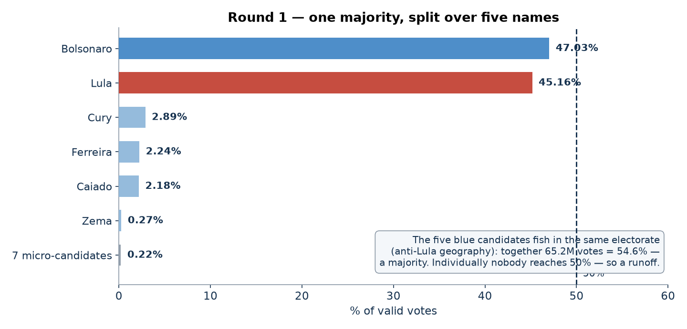
Model · Where might the 2022 votes have gone?
I built the model using 472,075 matching sections and tested it on sections left out of the fitting. The fit score was R² = 0.976. It put Lula’s total share 0.7 percentage points above the actual result in that test sample. This checks predictions of area totals in 2022; it does not verify individual choices or show that the model works in 2026.
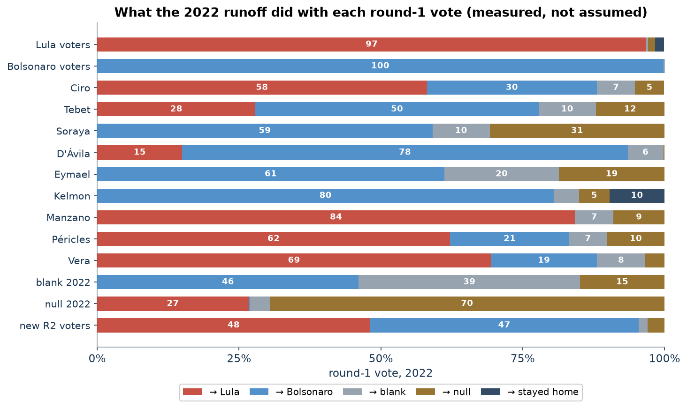
Scenario 2 · Apply the 2022 model to 2026
For this scenario, I paired 2026 candidates with 2022 candidates who did well in similar places, then reused the 2022 vote-transfer rates. That gives Flávio Bolsonaro 52.6% and Lula 47.4% of their combined vote. Pairing Flávio with Jair Bolsonaro is an assumption about two different candidates; I cannot show that they had the same voters. This is a what-if calculation, with no established forecast accuracy.
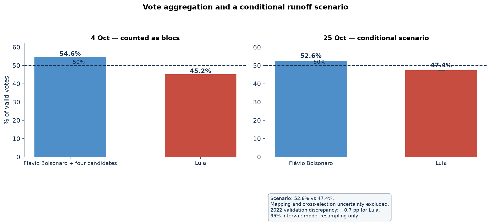
Comparison · Presidential and deputy vote totals
I compared presidential and party deputy totals in the same sections. These are totals for two separate races; I cannot link a person’s two votes.
| Party (candidate) | presidential | party deputy votes | pres ÷ dep | sections: deputy > president |
|---|---|---|---|---|
| PT (Lula) | 53.72M | 14.80M | 3.63 | 0.2% |
| PL (Bolsonaro) | 55.96M | 25.83M | 2.17 | 3.7% |
| AVANTE (Cury) | 3.44M | 1.84M | 1.87 | 13.6% |
| PTB (Ferreira) | 2.67M | 1.22M | 2.18 | 7.4% |
| PSD (Caiado) | 2.60M | 9.40M | 0.28 | 68.9% |
| NOVO (Zema) | 0.32M | 2.91M | 0.11 | 79.7% |
What the checks found
I ran eleven groups of checks on section totals. Together they give no clear evidence of manipulation. Some number patterns differ from the test’s expected pattern, but the test’s assumptions may not fit these data. These checks cannot guarantee an election was free of fraud.
How many votes were in very high-turnout sections?
I set the high-turnout cutoff at 91.6%: the 99.5th percentile, meaning only about 0.5% of sections have higher turnout. Those sections hold 0.62% of all ballots, 0.49% of Flávio Bolsonaro’s votes and 0.80% of Lula’s. This counts votes above a chosen line; it cannot identify fake votes or set a limit on their number. Choosing a percentile ensures that only a small share of sections lies above it.
I set the high-turnout cutoff at 91.6%: the 99.5th percentile, meaning only about 0.5% of sections have higher turnout. Those sections hold 0.62% of all ballots, 0.49% of Flávio Bolsonaro’s votes and 0.80% of Lula’s. This counts votes above a chosen line; it cannot identify fake votes or set a limit on their number. Choosing a percentile ensures that only a small share of sections lies above it.
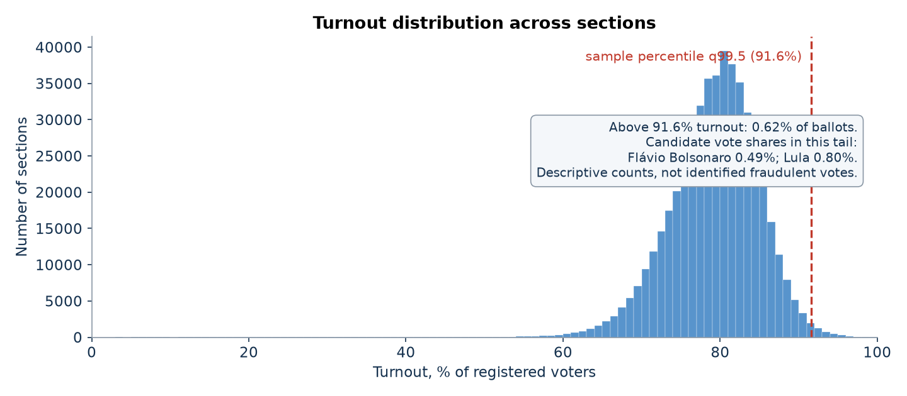
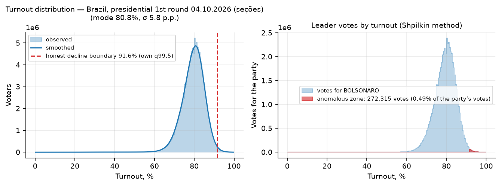
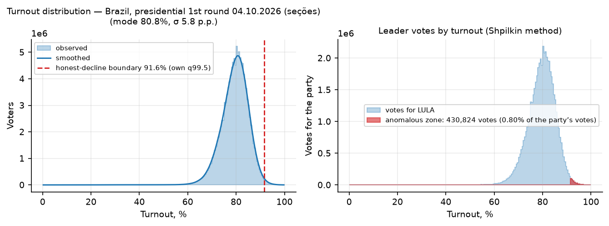
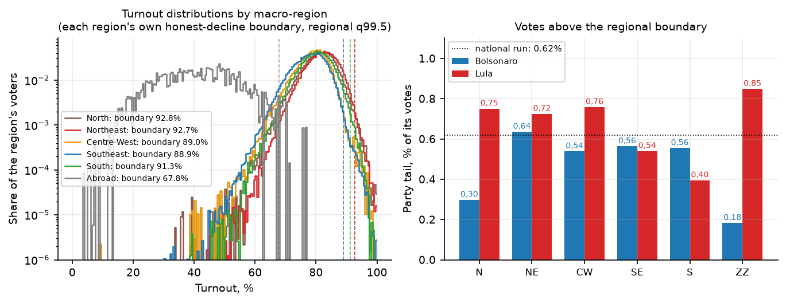
Does a candidate do better where turnout is higher? (“comet tail”)
Across Brazil, higher turnout has little link with either candidate’s vote share: the weighted correlation is −0.03 for Flávio Bolsonaro and +0.05 for Lula. Adding fake votes can sometimes create a rising tail on this chart. A link would not prove fraud, and a value near zero does not rule it out. Geography and the way areas are combined can also change the pattern.
Across Brazil, higher turnout has little link with either candidate’s vote share: the weighted correlation is −0.03 for Flávio Bolsonaro and +0.05 for Lula. Adding fake votes can sometimes create a rising tail on this chart. A link would not prove fraud, and a value near zero does not rule it out. Geography and the way areas are combined can also change the pattern.
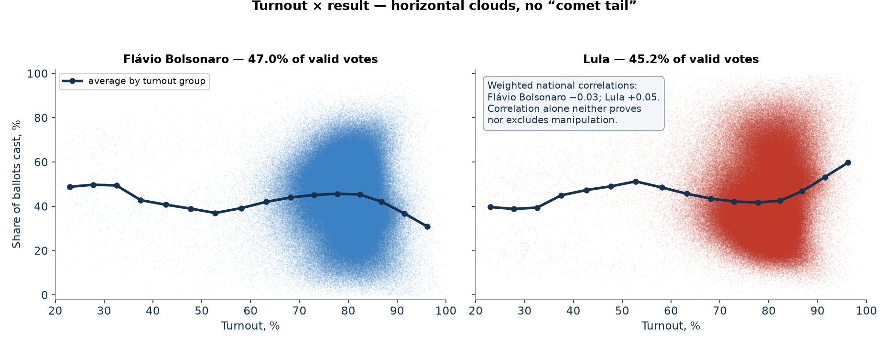
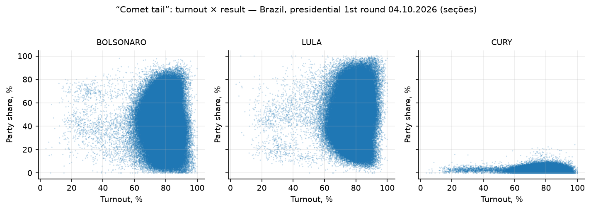
Groups on the turnout chart (Klimek election fingerprints)
I used a model that fits two bell-shaped groups to the turnout and vote-share chart. Both groups centre on about 78–80% turnout. None of the 12 candidate-and-region checks shows a separate group with both very high turnout and very high support. This describes the chart; it does not explain why groups appear or identify a way votes were manipulated.
I used a model that fits two bell-shaped groups to the turnout and vote-share chart. Both groups centre on about 78–80% turnout. None of the 12 candidate-and-region checks shows a separate group with both very high turnout and very high support. This describes the chart; it does not explain why groups appear or identify a way votes were manipulated.
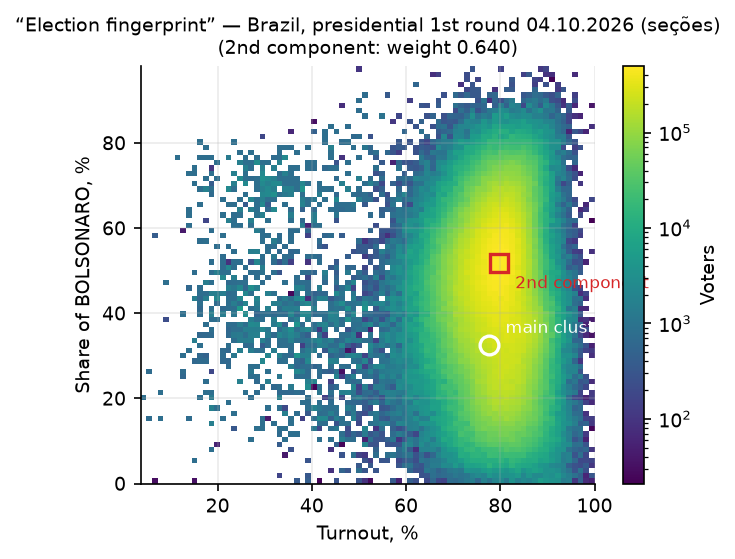
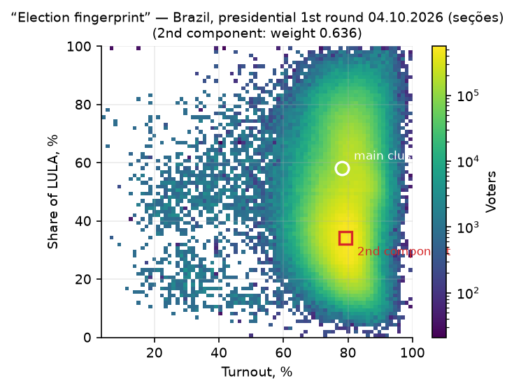
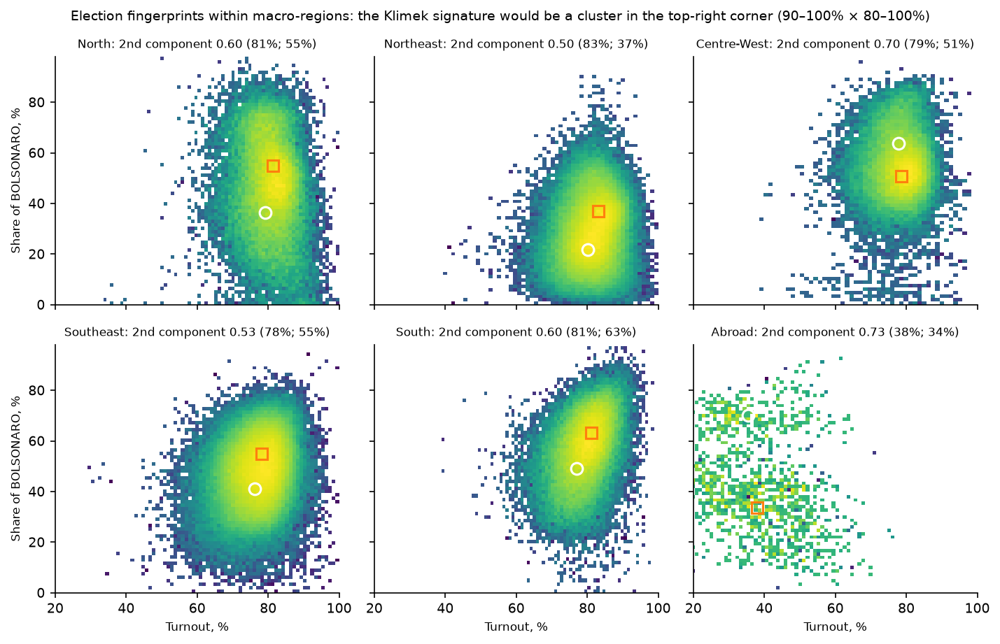
Round-number peaks (Kobak et al.)
Whole-percentage turnout appears about as often as in random simulations that account for section size (z = +0.5). For the leader’s share, z = −0.03. The z score measures distance from the expected result; documented falsification cases can reach scores in the dozens.
I checked how often turnout or the leader’s vote share lands on a whole percentage. Invented figures can favour round numbers. I compared the results with repeated random simulations (Monte Carlo) that account for each section’s size. Whole-percentage turnout appears in 1.79% of sections, matching the expected 1.79% (z = +0.5). For the leader’s share, z = −0.03. At multiples of 5, |z| ≤ 1.3. These z scores measure distance from the expected pattern; documented falsification cases can reach scores in the dozens.
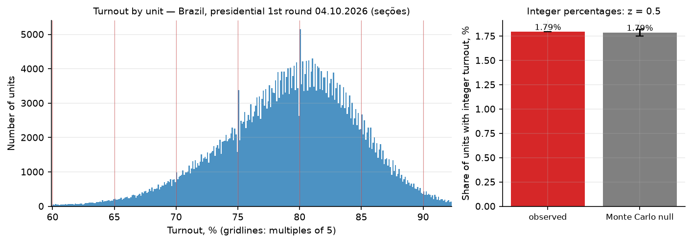
Benford's second digit
The second digits of vote counts differ from the Benford pattern used for comparison (p < 0.01). Benford’s rule may not fit small counts or sections of different kinds. The smooth digit pattern cannot settle whether fraud occurred. I would need a comparison that better fits these data before drawing a conclusion from this mismatch.
The second digits of vote counts differ from the Benford pattern used for comparison (p < 0.01). Benford’s rule may not fit small counts or sections of different kinds. The smooth digit pattern cannot settle whether fraud occurred. I would need a comparison that better fits these data before drawing a conclusion from this mismatch.
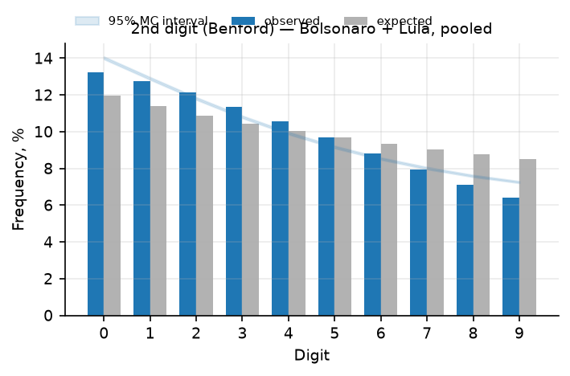
Last digit (Beber–Scacco)
The final digits appear about equally often in the full dataset. For counts of at least 100, the largest gap from equal frequency is 0.65 percentage points. Digits 0 and 5 have at most 0.12 percentage points of extra frequency. Filtering by count size changes what pattern to expect, and evenly spread digits cannot guarantee genuine results.
The final digits appear about equally often in the full dataset. For counts of at least 100, the largest gap from equal frequency is 0.65 percentage points. Digits 0 and 5 have at most 0.12 percentage points of extra frequency. Filtering by count size changes what pattern to expect, and evenly spread digits cannot guarantee genuine results.
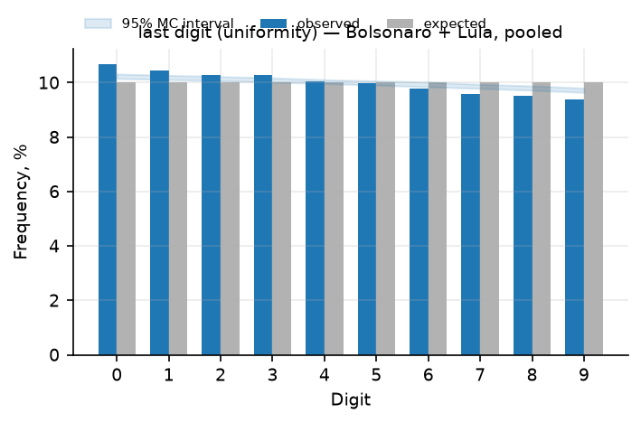
Does turnout track support within each state? (Kobak et al.)
The link between turnout and Flávio Bolsonaro’s vote share varies by state: correlations run from −0.30 to +0.49. The two leaders can show opposite patterns simply because a larger share for one leaves less for the other. These links alone cannot tell ordinary voter mobilisation from manipulation.
The link between turnout and Flávio Bolsonaro’s vote share varies by state: correlations run from −0.30 to +0.49. The two leaders can show opposite patterns simply because a larger share for one leaves less for the other. These links alone cannot tell ordinary voter mobilisation from manipulation.
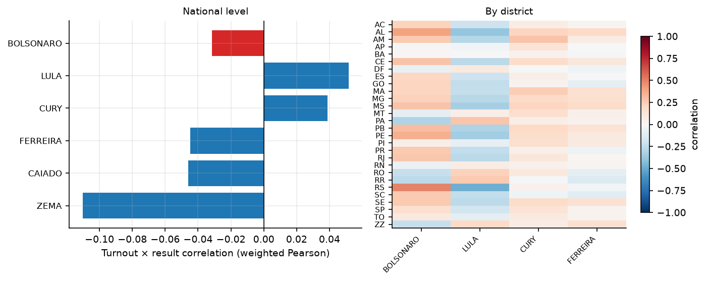
Unusual sections, computer checks and repeated totals
Comparing sections within each municipality flags 4,665 (0.93%) as unusual. The Isolation Forest computer method flags about 1%, as its chosen cutoff requires. One pair of sections has exactly the same results. Each finding needs a closer look at local circumstances. A flagged section is not necessarily manipulated, and an unflagged one is not necessarily sound.
Comparing sections within each municipality flags 4,665 (0.93%) as unusual. The Isolation Forest computer method flags about 1%, as its chosen cutoff requires. One pair of sections has exactly the same results. Each finding needs a closer look at local circumstances. A flagged section is not necessarily manipulated, and an unflagged one is not necessarily sound.
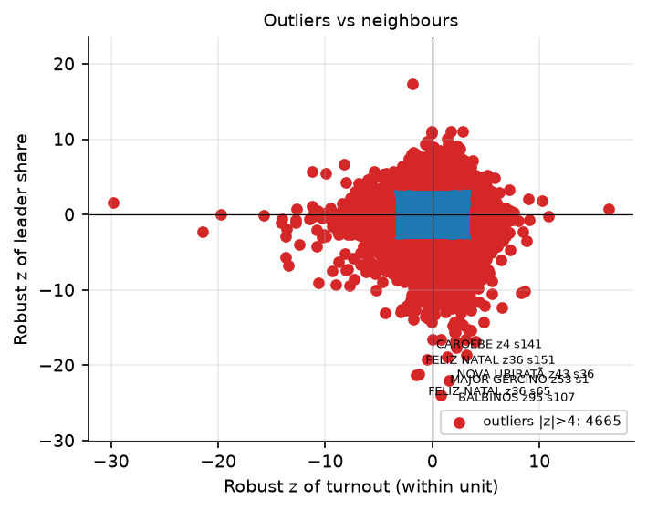
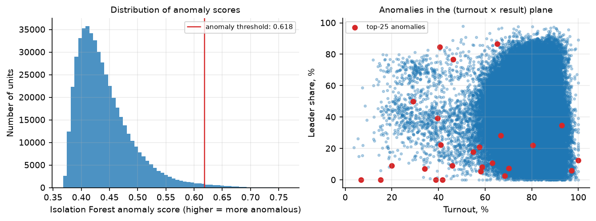
Do different voting-machine models give different results?
Vote shares differ across generations of voting machines. But the machines serve different places and groups of voters. Until I account for those differences, I cannot say the machines caused the result. This comparison also cannot certify their security.
Vote shares differ across generations of voting machines. But the machines serve different places and groups of voters. Until I account for those differences, I cannot say the machines caused the result. This comparison also cannot certify their security.
How do the same sections compare with 2022?
I matched 461,218 sections between 2022 and 2026: 92.4% of 2026 sections and 93.3% of votes. The high-turnout cutoffs are 91.5% and 91.6%. Sections above them hold 0.52–0.59% of ballots in 2022 and 0.62% in 2026. The patterns look similar, but that cannot show that either election was free of manipulation.
I matched 461,218 sections between 2022 and 2026: 92.4% of 2026 sections and 93.3% of votes. The high-turnout cutoffs are 91.5% and 91.6%. Sections above them hold 0.52–0.59% of ballots in 2022 and 0.62% in 2026. The patterns look similar, but that cannot show that either election was free of manipulation.
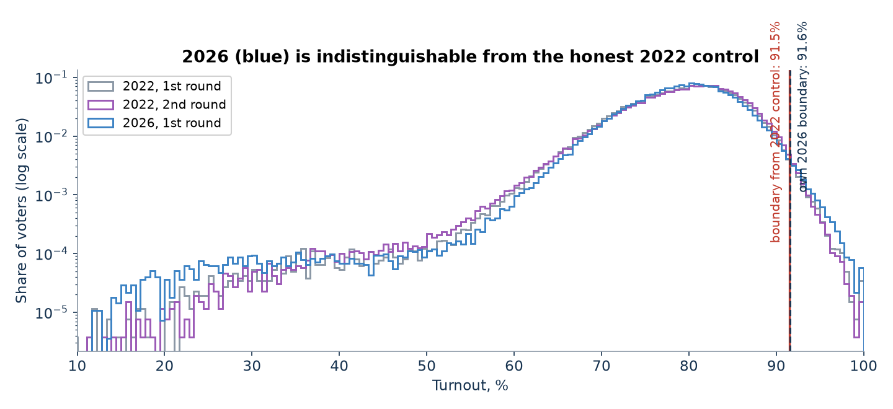
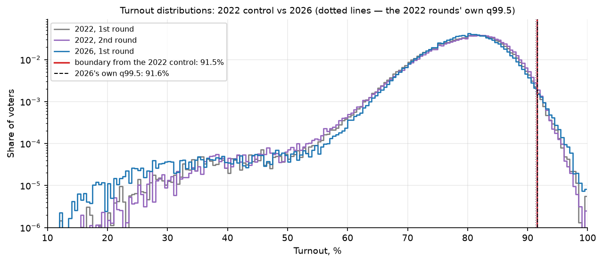
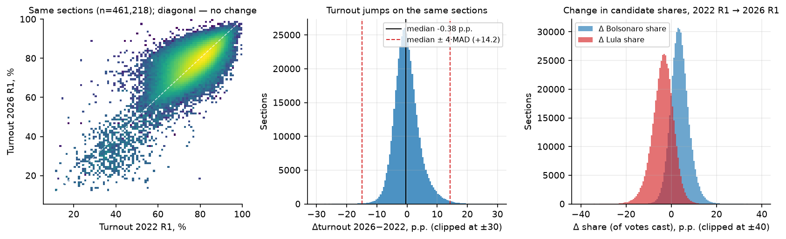
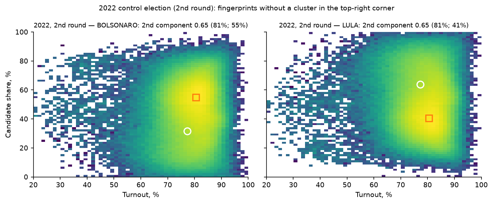
Would the checks notice deliberately changed data?
In a test copy of the data, I added about 2 million made-up ballots using the stated recipe. The high-turnout measure grew 22-fold. Rounding turnout to whole percentages in 5% of sections raised the z score, a measure of departure from the expected pattern, from 0.35 to 9.9. The tools detected these specific changes; this does not show they would detect every manipulation of a similar size.
In a test copy of the data, I added about 2 million made-up ballots using the stated recipe. The high-turnout measure grew 22-fold. Rounding turnout to whole percentages in 5% of sections raised the z score, a measure of departure from the expected pattern, from 0.35 to 9.9. The tools detected these specific changes; this does not show they would detect every manipulation of a similar size.
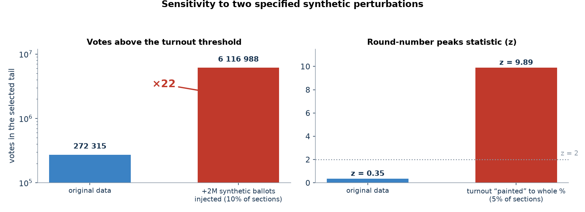
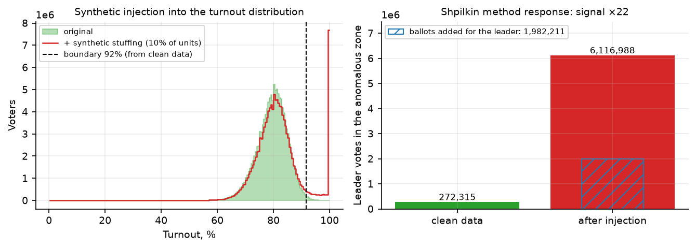
What this analysis cannot tell us
I checked published totals, rather than how voting machines or ballot handling worked. I used 2022 as a comparison, without assuming it was free of fraud. A test can miss manipulation. Its assumptions may not fit; nearby sections can resemble each other; and running many tests makes chance flags more likely. Matching totals for areas does not reveal individual voters’ choices.
Data and how to repeat the analysis
- Source: official section-level (seção) results from the TSE open-data portal (resultados-2026), final 1st-round files generated 5–6 October 2026: 499,248 sections including abroad voting — about 23 GB of CSV.
- The files agree in every check I ran: candidate votes match the detail files, blank and invalid counts match, section identifiers are unique, and turnout never exceeds registered voters. The national total matches the official result exactly. For comparison, I used both rounds of TSE resultados-2022, matching the same sections (92.4% coverage).
- The analysis uses open-source Python tools (pandas / scikit-learn). They run the Shpilkin, Klimek, Kobak and Beber–Scacco checks, compare sections with their neighbours, use Isolation Forest to flag unusual results, compare machine models and 2022 results, and test deliberately altered data.
- Full technical report (in Russian), the section dataset, scripts and all 18 figures / 21 tables are available in the project repository.
- Geographic grouping, modelled 2022 transfers and conditional 2026 scenarios: see PARADOXES.md. Interpret its outputs with the limitations stated above.